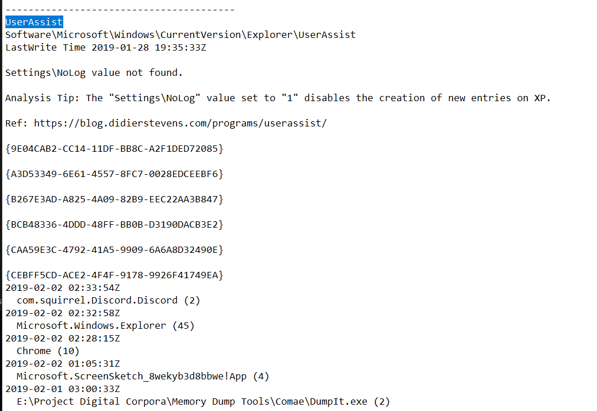
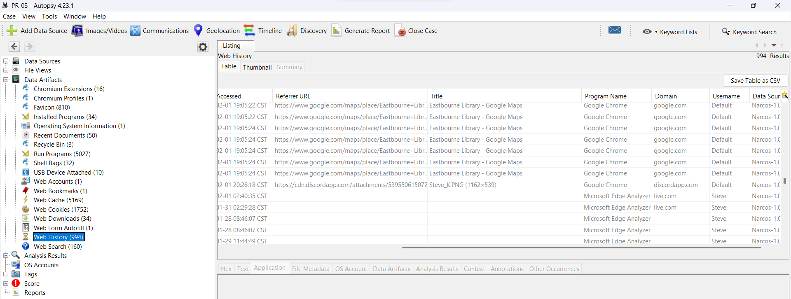
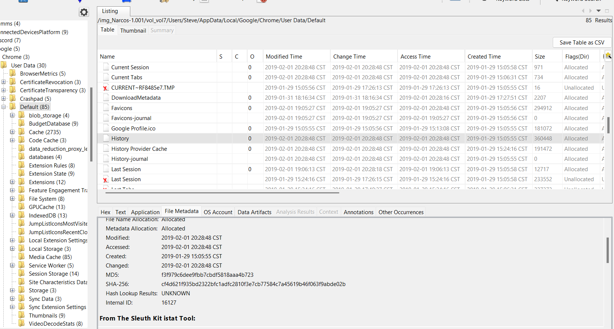
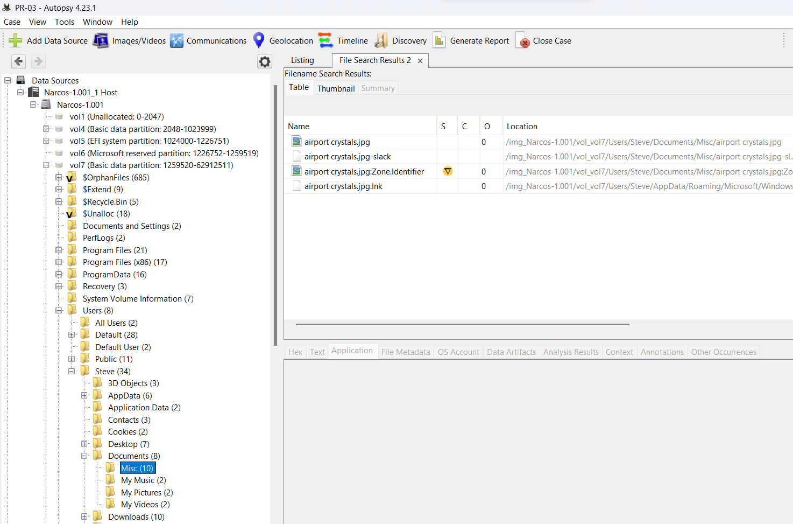
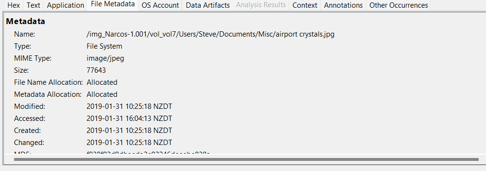
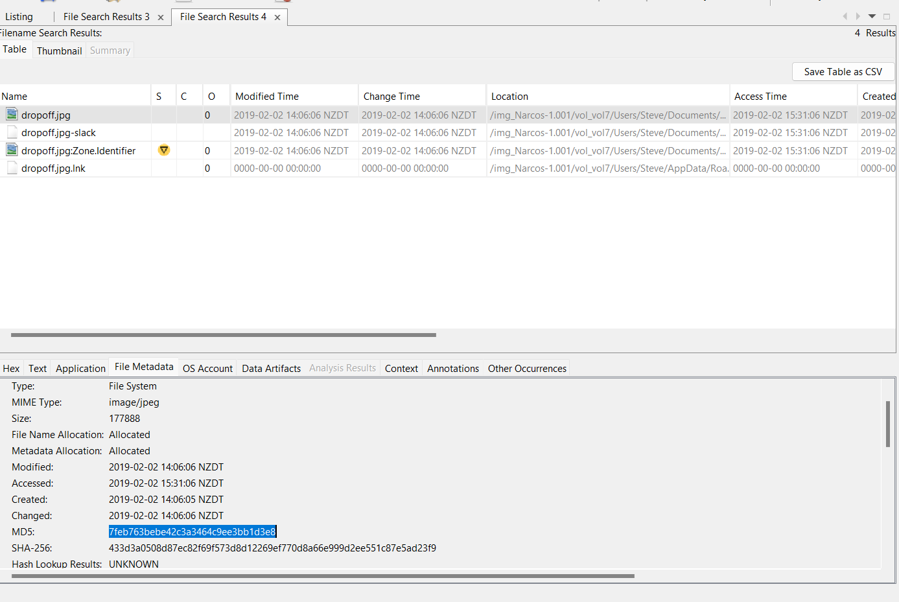

- Evidencia Analizada: Imagen forense
Narcos-1.001(21 segmentos RAW, 62,914,560 sectores) - Herramientas: Autopsy 4.23.1, FTK Imager y RegRipper
- Contexto del Caso: Tras interceptar a dos pasajeros procedentes de Australia en el aeropuerto de Wellington (Nueva Zelanda) con 1 kg de metanfetamina, las autoridades intervinieron un inmueble en Petone vinculado a Steve Kowhai y aseguraron el equipo de escritorio analizado.
Previo al análisis se validó la integridad criptográfica de la imagen Narcos-1.001 a Narcos-1.021 mediante FTK Imager, confirmando coincidencia exacta con el archivo de control original y ausencia de bloques dañados.

// Fig. 0 — Drive/Image Verify Results en FTK Imager contrastado con Narcos-1.001.txt
Resumen consolidado de los artefactos de sistema operativo, navegación, documentos, metadatos y herramientas localizadas en la partición principal vol7 de Narcos-1.001 (zona horaria de análisis configurada en NZDT / GMT+13:00).
| # | Hallazgo / Artefacto | Valor Exacto / Hash / Marca de Tiempo | Ruta dentro de la Imagen |
|---|---|---|---|
| 01 | Edición y versión de Windows (RegRipper winver) |
Windows 10 Pro, versión 1809 (Build 17763.rs5_release.180914-1434). Instalación: 2019-01-28 19:15:39 UTC (2019-01-29 08:15:39 NZDT). Propietario: Steve. |
/vol7/Windows/System32/config/SOFTWARE |
| 02 | Perfil de usuario principal | Carpeta: Steve | C:\Users\Steve |
| 03 | Clave UserAssist (RegRipper sobre NTUSER.DAT) |
LastWrite: 2019-01-28 19:35:33Z. Registra Discord, Explorer, Chrome, ScreenSketch y DumpIt. |
HKCU\Software\Microsoft\Windows\CurrentVersion\Explorer\UserAssist |
| 04 | Navegadores con actividad | Google Chrome y Microsoft Edge | ...\Chrome\User Data\Default\History...\Microsoft\Windows\WebCache\WebCacheV01.dat |
| 05 | Hash MD5 de Chrome History |
f3f979c6dee9fbb7cbdf5818aaa4b723 |
C:\Users\Steve\AppData\Local\Google\Chrome\User Data\Default\History |
| 06–07 | airport crystals.jpg (Ruta y creación) |
Creación: 2019-01-31 10:25:18 NZDT MD5: f938f92d9dbaeda2e92246deeebe830a |
C:\Users\Steve\Documents\Misc\airport crystals.jpg |
| 08–09 | dropoff.jpg (MD5 y modificación) |
MD5: 7feb763bebe42c3a3464c9ee3bb1d3e8Última modificación: 2019-02-02 14:06:06 NZDT |
C:\Users\Steve\Documents\Misc\dropoff.jpg |
| 10 | Reservaciones de vuelo | flightbookings.PNG Creación: 2019-02-02 15:28:44 NZDT | MD5: d1b21a1cddcb3494d637f2424cc5f0f1 |
C:\Users\Steve\Documents\Misc\flightbookings.PNG |
| 11 | Method run.jpg (MD5) |
69b225bc0ef5a0c003f1e2a6646aaf92Creado: 2019-01-31 10:21:24 NZDT | Modificado: 10:22:24 NZDT |
C:\Users\Steve\Documents\Misc\Method run.jpg |
| 12 | BNE.png (MD5) |
dffa98bdd7371d1806adb09db27ba283Creado: 2019-02-01 13:13:19 NZDT |
C:\Users\Steve\Downloads\Misc\BNE.png |
| 13 | Instalador de esteganografía | Image Steganography 1.5.2 Setup.exe MD5: c9b7c382dea6d7f45ae1bf437860cb69 |
C:\Users\Steve\Downloads\Image Steganography 1.5.2 Setup.exe |
| 14 | Instalador de cifrado | TrueCrypt Setup 7.1a.exe MD5: 7a23ac83a0856c352025a6f7c9cc1526 |
C:\Users\Steve\Downloads\TrueCrypt Setup 7.1a.exe |
| 15 | Caché de Discord y Windows Timeline | Caché Electron/Chromium (130 elementos) y SQLite ActivitiesCache.db |
C:\Users\Steve\AppData\Roaming\Discord\CacheC:\Users\Steve\AppData\Local\ConnectedDevicesPlatform\2418c0082017486a\ActivitiesCache.db |
>_ EVIDENCIAS VISUALES DESTACADAS (AUTOPSY Y REGRIPPER)
Muestra de las extracciones clave del registro, navegación y archivos en Documents\Misc (el juego completo de capturas y salidas se encuentra documentado en el PDF anexo).

// Pregunta 01 — Salida de RegRipper (plugin winver) sobre el hive SOFTWARE

// Pregunta 02 — Árbol de directorios en vol7 identificando C:\Users\Steve

// Pregunta 03 — Clave UserAssist extraída desde NTUSER.DAT con RegRipper

// Pregunta 04 — Artefacto Web History mostrando actividad de Google Chrome y Microsoft Edge

// Pregunta 05 — Metadatos y hash MD5 del archivo History de Google Chrome

// Pregunta 06 — Localización de airport crystals.jpg y sus artefactos asociados (.lnk y Zone.Identifier)

// Pregunta 07 — Marcas de tiempo de airport crystals.jpg en zona horaria NZDT

// Preguntas 08 y 09 — Hash MD5 y marcas de tiempo de dropoff.jpg en Autopsy
16. Correlación Geográfica y Logística (BNE.png, dropoff.jpg y flightbookings.PNG)
Lo observado: BNE.png (creado 2019-02-01 13:13:19 NZDT, descargado de internet) muestra el Story Bridge en Brisbane, Australia (código IATA BNE). dropoff.jpg (creado 2019-02-02 14:06:05 NZDT, con acceso directo .lnk) muestra un mapa de Eastbourne Library en Lower Hutt, Wellington. Una hora y 22 minutos después (2019-02-02 15:28:44 NZDT) se guarda flightbookings.PNG con una cotización para 2 adultos (AU$1,327.82) entre Brisbane (BNE) y Wellington (WLG) del 16 al 23 de febrero de 2019 (Virgin Australia ida / Qantas regreso). Los tres comparten último acceso el 2019-02-02 15:31:06 NZDT.
Límite probatorio: flightbookings.PNG es una cotización en pantalla, no un boleto pagado ni emitido. No confirma compra, abordaje, identidad de los pasajeros ni el propósito real del punto en Eastbourne Library.
17. Contraste de Mapas (airport crystals.jpg y Method run.jpg) con Recent Documents
Lo observado: En Recent Documents se registra la ejecución de ms-screensketch el 2019-01-31 10:20:52 NZDT, seguida 32 segundos después por Method run.lnk (10:21:24 NZDT) y su edición a las 10:22:24 NZDT (anotación manuscrita roja "Home" en Eastbourne con ruta hacia Wainuiomata, Naenae y Stokes Valley — 54 min / 43.3 km). Un segundo recorte a las 10:25:05 NZDT precede por 13 segundos a airport crystals.jpg (10:25:18 NZDT, ruta Aeropuerto de Wellington a Eastbourne — 47 min / 31.6 km).
Límite probatorio: Demuestra creación, anotación y apertura local en menos de 4.5 minutos, pero no acredita recorridos físicos reales, transporte de sustancias ni titularidad real del domicilio etiquetado como "Home".
18. Presencia y Actividad de Discord
Evidencia verificada: Múltiples archivos Prefetch (DISCORD.EXE-*.pf) acreditan ejecuciones repetidas entre el 2019-01-30 10:02:45 NZDT y el 2019-02-02 15:38:39 NZDT; instalación local en AppData\Local\Discord\app-0.0.304; caché multimedia con 130 elementos y base Local Storage\leveldb (000006.log modificado el 2019-02-02 15:38:47 NZDT, 8 segundos después de la última ejecución en Prefetch).
Límite probatorio: Discord almacena el historial de mensajes en servidores en la nube y no en texto claro dentro de leveldb. Sin registros del servidor no puede concluirse qué se conversó, con qué interlocutores ni la autoría física frente al teclado.
19. Herramientas de Esteganografía y Cifrado (Diferenciación por Niveles)
Instaladores en Downloads: TrueCrypt Setup 7.1a.exe (2019-01-30 12:27:43 NZDT) e Image Steganography 1.5.2 Setup.exe (2019-02-01 13:16:32 NZDT). Solo prueban presencia en disco.
Registro SOFTWARE documenta TrueCrypt v.7.1a; carpetas de datos en AppData\Roaming\TrueCrypt, Image_Steganography e Image_Steganography_Setup.
Prefetch confirma ejecución de TRUECRYPT SETUP (12:28:17), TRUECRYPT.EXE (12:31:25) y TRUECRYPT FORMAT.EXE (12:31:29 del 2019-01-30 NZDT); e IMAGE STEGANOGRAPHY.EXE (2019-02-01 13:16:56 NZDT).
Abrir el asistente no equivale a crear un contenedor. No se hallaron volúmenes cifrados ni imágenes con datos ocultos comprobables en el disco, sin descartar medios externos.
20. Hipótesis Principal, Explicación Alternativa y Evidencias Adicionales
> Hipótesis Principal
El equipo (Narcos-1.001, perfil Steve) habría operado como estación de planificación logística, comunicación y preparación vinculada al traslado o distribución de metanfetamina cristalina entre Brisbane (BNE) y Wellington / Lower Hutt (WLG) entre el 29 de enero y el 2 de febrero de 2019 (NZDT).
> Explicación Alternativa
La actividad podría corresponder a investigación documental, simulación o pruebas personales: descarga de notas de prensa sobre incautaciones y pandillas (Mongrel Mob), rutas hipotéticas en Maps, cotizaciones sin compra y exploración de software de privacidad sin ejecución ilícita real.
Cuatro hallazgos que sustentan el análisis:
- Planificación geográfica y logística correlacionada: Mapas anotados vía ScreenSketch (
Method run.jpg,airport crystals.jpg), másBNE.png,dropoff.jpgyflightbookings.PNG. - Material guardado y eliminado en
$Recycle.Bin: Tres imágenes (620x349.jpg,price-meth-bust-4.jpgyeight_col_patches_crp.jpg) guardadas el2019-01-31y enviadas a Papelera el2019-02-01 15:48:41 NZDT(cristales azules, efectivo y parches de Mongrel Mob MC). - Uso activo de Discord en escritorio: Ejecuciones repetidas en Prefetch y escritura local en
leveldben paralelo a la creación de los mapas y cotizaciones. - Instalación y ejecución de herramientas de ocultamiento/cifrado: Ejecución verificada de
TrueCrypt(incluido su asistente de formato) eImage Steganography, sin contenedores resultantes en el disco.
Dos evidencias adicionales necesarias para confirmar o descartar la hipótesis:
- Registros del servidor o exportación de comunicaciones de Discord: Para verificar contenido de mensajes, adjuntos e identidad de interlocutores.
- Registros externos de aerolíneas, transacciones financieras o dispositivos móviles: Para comprobar compra/abordaje de los vuelos del 16 al 23 de febrero de 2019 y desplazamientos físicos reales.
Referencia académica obligatoria (conjuntos de datos estandarizados):
Garfinkel, S., Farrell, P., Roussev, V., & Dinolt, G. (2009). Bringing Science to Digital Forensics with Standardized Forensic Corpora. Digital Forensic Research Workshop (DFRWS), Montreal, Canadá. https://simson.net/clips/academic/2009.DFRWS.Corpora.pdf
Escenario forense utilizado (citado por separado):
Digital Corpora. (2019). 2019 Narcos Scenario (Narcos-1.001 Forensic Disk Image) [Conjunto de datos estandarizado para informática forense]. Digital Corpora. https://digitalcorpora.org/
Referencias complementarias:
- Carrier, B. (2005). File System Forensic Analysis. Addison-Wesley Professional.
- Sleuth Kit & Autopsy. (2024). Autopsy Digital Forensics Platform (Versión 4.23.1) – User Documentation [Software de análisis forense digital]. Basis Technology. https://www.autopsy.com/
- IATA. (s. f.). Airline and airport code search. https://www.iata.org/en/publications/directories/code-search/
Documento íntegro con todas las capturas de Autopsy, salidas de RegRipper, evidencia de papelera y análisis paso a paso.